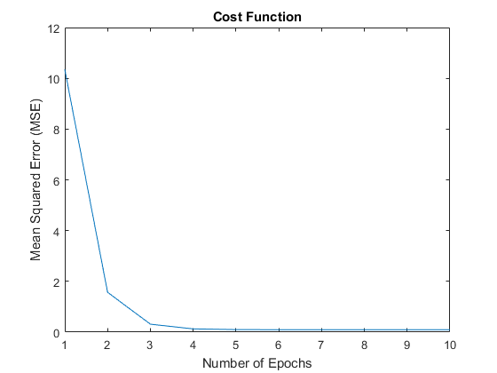

Contents
Linear Regression using LMS (batch and online learning) Example
Author: SHUJAAT KHAN, shujaat@kaist.ac.kr
clc close all clear all
Dummy System representation by Linear Equation Y=Wx+b;
xi = randn(5,1000); % 1000 random samples each of length 5 Ws = randn(5,1); % 5 inputs 1 output bs = randn(); % bias in system SNR = 10; % noise in measurements ys = Ws'*xi + bs; % dummy system ys = awgn(ys,SNR); % noisy output
LMS parameters
% choose learning mode learning_mode ='online'; % learning_mode ='batch'; eta=1e-3; % step-size Wm=randn(size(xi,1),1); % initial weights bm=randn(); % initial bias ym=0*ys; epochs=10; % training epochs
Learning weights and bias
for i=1:epochs ind=randperm(size(xi,2)); % shuffling of input samples (for better generealization) for n = 1: size(xi,2) ym(ind(n))=Wm'*xi(:,ind(n)) + bm; % estimated output e(n)=(ys(ind(n))-ym(ind(n))); % estimaion error % online learning if strcmp(learning_mode,'online') Wm=Wm+eta*xi(:,ind(n))*e(n); bm=bm+eta*e(n); end end % batch learning if strcmp(learning_mode,'batch') Wm=Wm+eta*xi(:,ind)*e'; bm=bm+eta*sum(e); end Imse(i) = mse(e); % mean squared error (cost function) end
Results
figure plot(Imse); xlabel('Number of Epochs'); ylabel('Mean Squared Error (MSE)'); title('Cost Function'); % noise is system ~= noise in model(mse) [SNR -10*log10(Imse(end))] % system weights and bias ~= model weights and bias [Ws' bs;Wm' bm]
ans =
10.0000 10.2004
ans =
0.8987 -0.6865 1.4684 1.6453 0.0220 1.7051
0.8751 -0.6695 1.4775 1.6296 0.0375 1.6868
